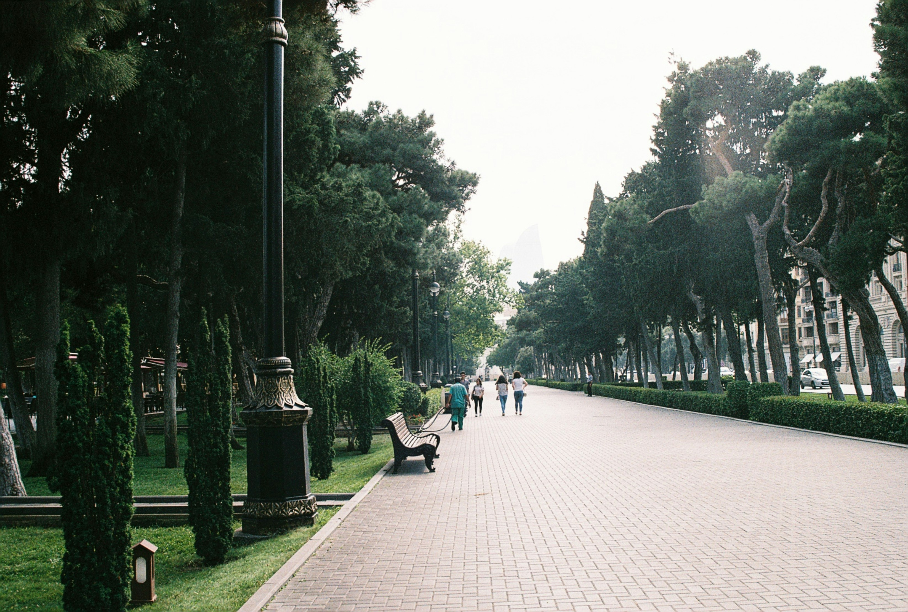

🌸 예쁜 줄만 알았죠? 도시를 지키는 🌳 가로수의 비밀
화사한 벚꽃 잎이 흩날리는 요즘, 길을 걷다 문득 이런 생각 안 해보셨나요? "어? 우리 동네엔 왜 이렇게 은행나무가 많지?", "저 나무는 언제부터 저기 있었을까?", "누가 어떤 나무를 심을지 정하는 걸까?"
사실 우리가 매일 지나치는 가로수 한 그루에도 다 이유가 있답니다! 가로수는 그냥 예쁜 나무가 아니라, 그 시대를 살았던 사람들이 어떤 도시를 원했고, 어떤 고민을 했는지 보여주는 작은 거울 같은 존재예요. 오늘은 우리 동네 가로수에 담긴 흥미진진한 도시 이야기 속으로 함께 떠나볼까요?
은행나무, 도시의 베테랑 수비수
지금도 길에서 가장 흔하게 만나는 나무 중 하나가 은행나무죠? 옛날 도시가 한창 커나가던 시절에는 뭐니 뭐니 해도 튼튼하고 잘 자라는 게 중요했어요. 매연도 심하고 땅도 척박한 곳에서 꿋꿋하게 살아남아야 했으니까요.

단풍이 든 은행나무. ©note thanun, Unsplash
은행나무는 바로 그런 슈퍼 튼튼이였어요. 병충해도 잘 이겨내고, 공기도 깨끗하게 해주는 능력까지 갖췄으니, 도시 입장에서는 정말 고마운 존재였죠. 도시를 빨리 푸르게 만들어야 했던 그 시절엔 최고의 선택이었던 셈이에요. 물론, 가을만 되면 나는 특유의 냄새 때문에 요즘엔 미움도 받지만요. 😅 이것도 도시가 발전하면서 사람들이 '냄새 없는 쾌적함'을 중요하게 생각하게 되었다는 변화를 보여주는 거겠죠?
양버즘나무(플라타너스), 도시의 에어컨
넓은 잎으로 시원한 그늘을 만들어주는 양버즘나무, 플라타너스도 은행나무 못지않게 오랫동안 우리 곁을 지켜왔어요. 이 나무의 별명은 바로 녹색 에어컨! 잎을 통해 수분을 내뿜으면서 주변 온도를 뚝 떨어뜨리는 능력이 정말 대단하거든요.🌡️
교목과 관목이 같이 심어진 거리. ©thesilvafocus, Unsplash
가로수가 없는 곳보다 양버즘나무 같은 나무가 있는 곳의 온도가 더 낮고, 특히 나무를 여러 겹으로 심거나 작은 나무들과 함께 심으면 효과가 더 좋대요. 이건 가로수가 단순히 보기 좋은 걸 넘어, 도시의 뜨거운 열기를 식혀주는 꼭 필요한 존재라는 걸 보여줘요. 물론, 너무 쑥쑥 자라서 간판을 가리거나 햇빛을 막는 바람에 가끔 민원이 들어오기도 하지만요. 이것도 도시와 자연이 사이좋게 지내기 위해 우리가 함께 풀어야 할 숙제겠죠? 몽촌토성에 만개한 벚꽃. ©weeklycity
언제부턴가 봄이면 우리 마음을 설레게 하는 벚꽃길이 정말 많아졌죠? 벚나무가 이렇게 인기 가로수가 된 건, 우리 도시가 이제 단순히 먹고 사는 문제를 넘어 삶의 즐거움, 아름다운 풍경을 중요하게 생각하기 시작했다는 신호예요. 화사한 꽃으로 거리를 밝히고 계절의 변화를 느끼게 해주니, 시민들의 만족도도 높을 수밖에요. 벚나무는 가로수가 도시의 매력을 한껏 끌어올리는 역할을 할 수 있다는 걸 제대로 보여주는 좋은 사례에요. 요즘 새롭게 떠오르는 가로수 스타, 바로 이팝나무에요! 하얀 쌀밥 같은 꽃이 탐스럽게 피는 이 나무는 장점이 정말 많아요. 병충해와 공해에도 강하면서 은행나무처럼 냄새 걱정도 없고, 봄이면 아름다운 꽃으로 도시를 환하게 밝혀주죠. 이팝나무가 주목받는 이유는, 과거 가로수들의 단점을 보완하고 장점은 살리려는 도시의 업그레이드 노력을 보여주기 때문이에요. 또, 한 종류 나무만 너무 많이 심으면 특정 병충해가 돌 때 큰 문제가 생길 수 있잖아요? 그래서 이렇게 다양한 종류의 나무를 심는 건, 변화무쌍한 미래에 대비하는 전략이기도 해요. 우리 곁의 가로수 이야기가 생각보다 흥미롭지 않나요? 튼튼함이 중요했던 시절의 은행나무부터, 아름다움을 선사하는 벚나무, 그리고 미래를 위해 다양성을 고민하는 이팝나무까지. 가로수의 변화는 우리 도시가 무엇을 중요하게 생각하며 발전해왔는지를 보여주는 생생한 역사 기록이에요. 특히 최근에는 한두 종류의 나무만 심던 것에서 벗어나, 다양한 종류의 가로수를 심는 추세예요. 이는 기후변화나 특정 병충해가 발생했을 때 도시 전체의 가로수가 위험해지는 것을 막고, 더 다채롭고 건강한 도시 생태계를 만들기 위한 노력이에요. 실제로 전국적으로 무려 140종류가 넘는 가로수가 새로 심어져 지역별 특색을 더하고 있어요. 요즘엔 수원이나 세종처럼 시민들이 직접 팔 걷어붙이고 가로수 돌보기에 참여하는 멋진 모습도 볼 수 있대요! 가로수는 더 이상 시청에서 알아서 하는 일이 아니라, 우리 모두가 함께 관심을 갖고 만들어가는 도시의 소중한 자산인 거죠. 다음번에 길을 걸을 땐, 우리 동네 나무들을 그냥 지나치지 마시고 한번 더 눈여겨봐 주세요. 그 안에 담긴 도시의 이야기와 우리의 미래를 발견할 수 있을지도 몰라요. 건강한 가로수와 함께 우리 도시도 더욱 푸르게 숨 쉴 수 있도록, 우리 모두의 따뜻한 관심이 필요하답니다! 🌳💚
벚나무, 이제는 예쁜 게 좋아!
이팝나무, 새롭게 떠오르는 가로수 스타
가로수, 도시의 숨은 영웅들을 다시 보다